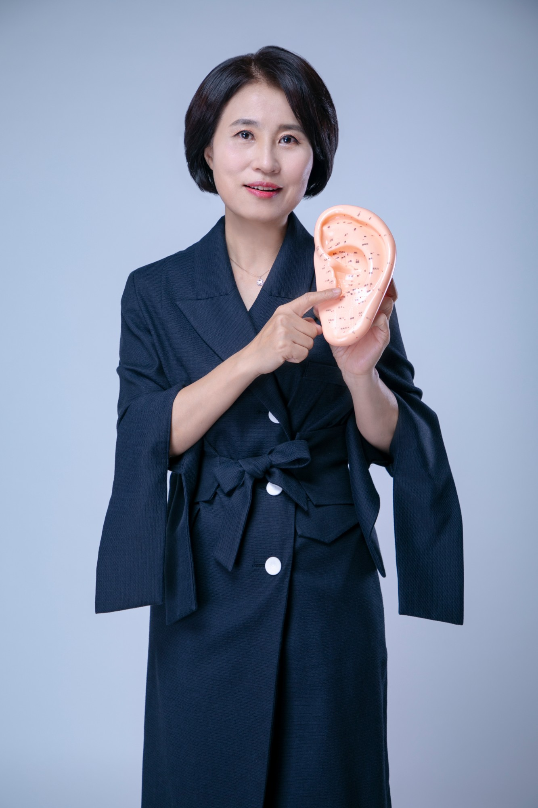
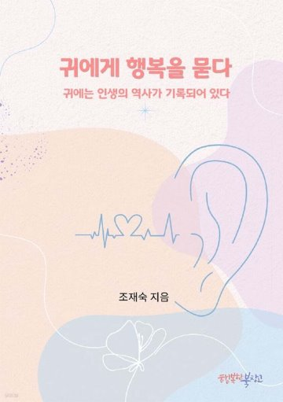
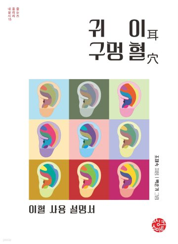
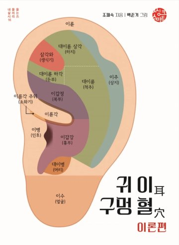
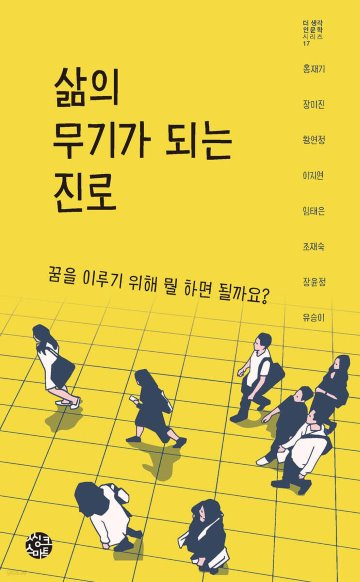

단계별 이혈 교육
입문 · 심화 · 강사 3단계로 이어지는 25주 정규과정. 보고, 만지고, 기록하는 실습 중심으로 배웁니다.

ABOUT
귀에 나타난 작은 변화를 통해 한 사람의 생활 이야기를 이해하고,
스스로 건강을 돌볼 수 있도록 돕습니다.
쉬운 말과 정확한 시범으로 이혈테라피를 가르칩니다.
CAREER
LECTURES
단계별 정규 교육부터 자격 과정, 맞춤 특강까지 함께합니다.
입문 · 심화 · 강사 3단계로 이어지는 25주 정규과정. 보고, 만지고, 기록하는 실습 중심으로 배웁니다.
귀운동지도사 · 귀분석지도사 · 귀분석교육지도사 (각 2급·1급). 배운 것을 나누는 전문가로 성장합니다.
기업 · 기관 맞춤 이혈 건강 특강과 1:1 이혈건강관리 상담으로 생활 속 건강 습관을 함께 찾습니다.
GALLERY
강의실에서, 봉사 현장에서 귀로 건강을 나눕니다.
🔒 함께한 분들의 개인정보 보호를 위해 얼굴과 연락처는 모자이크했어요.
CONTACT
강의 요청, 자격 과정, 건강상담 모두 환영합니다.
안녕하세요 🌿
이혈테라피 조재숙입니다
어디로 안내해 드릴까요?
현장 경험
사교육 현장에서 25년을 보낸 뒤, 이혈요법 상담사의 길로 들어섰습니다. 어려서 몸이 약해 접어야 했던 '사람을 돌보는 꿈'을 이혈테라피로 이루어 가고 있습니다.
학위 논문 · 건양대학교
박사 일반대학원 · 2025
건강증진행위와 정신건강의 매개효과를 포함하여
전국 신중년(만 50~69세) 353명을 조사해, 사회적 관계가 건강을 챙기는 생활 습관과 마음 건강을 거쳐 성공적 노화로 이어진다는 것을 밝혔습니다. 성공적 노화는 몸 · 마음 · 관계 · 영성이 함께 어우러지는 총체적 치유의 과정입니다.
RISS에서 박사 논문 보기석사 보건복지대학원 · 2021
이혈상담치유 교육을 받은 사람들에게 나타난 변화를 정리했습니다.
체계적 교육 과정
보고, 만지고, 기록하고, 설명하는 실습 중심으로 배웁니다.
강의 분야
민간자격 과정
2급 생활 속 귀운동의 기초와 안전한 실습 방법
1급 대상별 귀운동 루틴 구성과 소그룹·기관 프로그램 지도
2급 귀의 구조 이해, 시진·촉진 관찰과 기록의 기초
1급 귀의 반응을 생활 습관과 연결하는 통합 분석과 상담 실무
2급 눈높이에 맞춰 이론과 실습을 전달하는 교육 진행의 기초
1급 이혈교육 과정 설계·운영과 강사 양성
자격 취득 절차
특강 · 건강상담
대상과 목적에 맞춘 이혈 건강 특강, 그리고 귀의 반응을 함께 살피며 생활 속 건강 습관을 찾는 1:1 상담을 진행합니다.
이런 분께 추천해요
이혈 관련 저서

행복한북창고 · 조재숙 지음
귀에는 인생의 역사가 기록되어 있다
사교육 현장에서 25년간 일하다 이혈요법 상담사의 길로 들어선 저자의 이야기입니다. 어려서 몸이 약해 의사의 꿈을 접었던 저자가 이혈요법으로 그 꿈을 이루어 가는 과정, 그리고 귀를 통해 아픈 곳을 찾는 방법과 집에서 쉽게 따라 하는 귀 마사지까지 담았습니다.

씽크스마트 · 내 몸을 살리는 시리즈 15
조재숙 지음 · 백준기 그림
귀를 보면 건강이 보인다
'인체의 축소판'이라 불리는 귀는 몸 전체와 연결되어 있습니다. 『황제내경』에서 유래한 이혈요법을 오늘날의 이혈테라피로 소개하고, 귀의 혈자리를 정리했습니다.
150개 상황별 혈자리를 표시해, 집에서 스스로 상황과 필요에 맞게 활용할 수 있도록 도와줍니다.

씽크스마트 · 내 몸을 살리는 시리즈 16
조재숙 지음 · 백준기 그림
귀의 각 부위와 우리 몸의 관계를 그림으로 정리한 『귀이구멍혈』의 이론편입니다.

씽크스마트 · 공저 (8인)
국 · 영 · 수보다 진로
입시를 위한 교과목 공부도 중요하지만, 그보다 먼저 '진로'를 고민해야 한다고 말하는 책입니다. 각자의 분야에서 일하는 8명의 저자가 함께 썼습니다.
조재숙은 공저자로 참여했습니다.
씽크스마트 · 칼럼집 시리즈 · 공저
경험이 칼럼이 되는 지식 콘텐츠
독서 모임(미디어 성과독서 모임 MPR 클럽 등) 참여자들이 책을 읽고 토론한 뒤, 각자의 분야에서 쓴 칼럼을 엮은 칼럼집 시리즈입니다.
조재숙은 1호 · 2호 · 3호 모두 공저자로 참여했습니다.
표지를 누르면 예스24에서 볼 수 있어요.